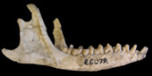

Dentition and
Mandible


This work is licensed under a
Creative Commons License.
Upper Dentition
94
dental reduction ; 0 teeth present 1 atrophied 2 baleen,
95 incisor enamel ; 0 covers tooth 1 anterior band 2 abs-tip only,
96 number of incisors; 0 none 1 one 2 two 3 three 4 four 5 five,
97 posterior premaxillary diastema ; 0 small-abs 1 large gap,
98 incisor growth ; 0 crown-root junction 1 hypsodont,
99 tooth replacement ; 0 antemolars 1 last premolar only 2 uncalcified 3 continuous,
100 canine growth ; 0 determinate 1 hypsodont,
101 cheektooth enamel ; 0 present 1 atrophied,
102 cheektooth orientation ; 0 parallel 1 V-shaped,
103 cheektooth growth ; 0 crown-root suture 1 hypsodont,
104 upper P3 ; 0 pres 1 abs,
105 P3 crown ; 0 mediolaterally compressed 1 prominent lingual cusp(s),
106 P4 crown ; 0 mediolaterally compressed 1 prominent lingual cusp(s),
107 metacone ; 0 present 1 absent,
108 protocone ; 0 present 1 absent,
109 molar ectoloph ; 0 unconnected 1 pi shaped,
110 stylar shelf ; 0 broad 1 narrow,
111 molar shearing ; 0 multilocus 1 carnassial,
95 incisor enamel ; 0 covers tooth 1 anterior band 2 abs-tip only,
96 number of incisors; 0 none 1 one 2 two 3 three 4 four 5 five,
97 posterior premaxillary diastema ; 0 small-abs 1 large gap,
98 incisor growth ; 0 crown-root junction 1 hypsodont,
99 tooth replacement ; 0 antemolars 1 last premolar only 2 uncalcified 3 continuous,
100 canine growth ; 0 determinate 1 hypsodont,
101 cheektooth enamel ; 0 present 1 atrophied,
102 cheektooth orientation ; 0 parallel 1 V-shaped,
103 cheektooth growth ; 0 crown-root suture 1 hypsodont,
104 upper P3 ; 0 pres 1 abs,
105 P3 crown ; 0 mediolaterally compressed 1 prominent lingual cusp(s),
106 P4 crown ; 0 mediolaterally compressed 1 prominent lingual cusp(s),
107 metacone ; 0 present 1 absent,
108 protocone ; 0 present 1 absent,
109 molar ectoloph ; 0 unconnected 1 pi shaped,
110 stylar shelf ; 0 broad 1 narrow,
111 molar shearing ; 0 multilocus 1 carnassial,
Jaw
112
mandible ;
0 robust 1 threadlike,
113 condyle height ; 0 at toothrow 1 above toothrow,
114 coronoid shape ; 0 large 1 reduced,
115 coronoid position ; 0 superior condyle 1 inferior condyle,
116 jaw angle ; 0 narrow 1 medial inflection,
117 symphysis-fusion ; 0 unfused 1 fused,
118 symphysis-length ; 0 anteroposteriorly narrow 1 >30% dentary length,
119 symphysis-ventral lip ; 0 absent 1 anteroventral lip,
113 condyle height ; 0 at toothrow 1 above toothrow,
114 coronoid shape ; 0 large 1 reduced,
115 coronoid position ; 0 superior condyle 1 inferior condyle,
116 jaw angle ; 0 narrow 1 medial inflection,
117 symphysis-fusion ; 0 unfused 1 fused,
118 symphysis-length ; 0 anteroposteriorly narrow 1 >30% dentary length,
119 symphysis-ventral lip ; 0 absent 1 anteroventral lip,
Lower Dentition
120 lower m3 presence ; 0 present 1 absent,121 talonid basin ; 0 present 1 reduced,